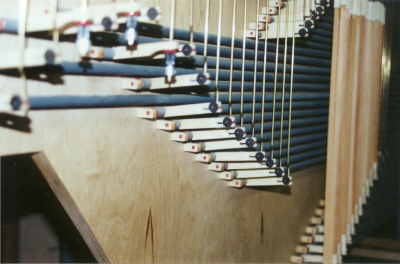

Hrací traktura, nazývaná rovněž
tónová nebo manuálová či pedálová je systém (soustava)
prvků, převádějících pohyb klávesy stisknuté varhaníkem na pohyb ventilů
vpouštějících stlačený vzduch do píšťal, umístěných na vzdušnici. Mechanická
verze traktury je sestavena z jednotlivých mechanických
elementů, které nejsou zpravidla použity samostatně, ale v montážních
skupinách. Vyplývá to jednoznačného spojení každé konkrétní klávesy s
odpovídajícím ventilem (ventily) ve vzdušnici. Na ilustračním obrázku, představujícím řez varhanami s mechanickou trakturou je zvýrazněna tónová traktura červeně (popis jednotlivých součástí je uveden na úvodní stránce "Mechanická traktura"). |
Podívejme se teď blíže na nejčastěji používané elementy
mechanické traktury. Na fotografii je zachycena skupina úhelníků společně
s připojenými konci abstraktů, které pohyb rozvádějí dále ve svislém i
vodorovném směru: |

Podobně je tomu v případě převodových tyčí - hřídelů,
které jsou ve varhanách zpravidla namontovány na společné desce, která
se nazývá hřídelnice (hřídelová deska, válečník). Jejím úkolem je rozvést
pohyb do stran (varhany jsou vždy širší, než je šířka klávesnice, hřídelnice
umožňuje příčný rozvod pohybu a díky své důmyslné konstrukci zabírá v
nástroji minimum místa). Hřídelová deska může být ve varhanách umístěna
svisle i vodorovně podle potřeby a nemusí být jen jedna. Hřídele na hřídelnici
jsou zpravidla různých délek (podle potřeby převedení pohybu) a umístěné
tak, aby si jejich raménka navzájem nepřekážely v pohybu. Použití hřídelů
ukazují následující obrázky. |


Jeden z nejčastěji používaných způsobů využití hřídelů ve varhanách.
|
|
Všimněme si nyní (dobře
je to patrné na předchozím obrázku), že klávesy a jim odpovídající ventily
jsou rozmístěny ve dvou rovnoběžných řadách. Přesto nelze jednoduše přímo
spojit jednotlivé elementy tak, aby každá klávesa pohybovala jí příslušným
ventilem. Vzdálenosti mezi jednotlivými klávesami totiž neodpovídají vzdálenostem
mezi ventily ve vzdušnici (místo, potřebné pro píšťaly je větší než šířka
klávesy), nepodařilo by se proto spojit všechny elementy jen pomocí samotných
abstraktů. Potřebujeme tedy další prvek, jehož prostřednictvím převedeme
pohyb v příčném směru. A tím může být právě hřídel. |

Ve většině varhan s mechanickou trakturou je tento
systém podstatně propracovanější a sestává z mnoha dalších mechanických
prvků - úhelníků, abstraktů, přezmenů, bodců atd. Jen funkce hřídelů jako
prvku pro příčný rozvod pohybu je vždy stejná. Hřídel je mechanismem,
který překonává nestejné vzdálenosti mezi ostatními elementy traktury
a umožňuje mimo jiné rovnoběžné vedení všech abstraktů ovládajících ventily. V malých varhanách je možné se setkat s mechanismem, který je kombinací tradičního hřídelového mechanismu s úhelníky. Jedná se o dvouramennou páku s rameny upevněnými na hřídeli pod pravým úhlem. Na následující animaci práce mechanické traktury je příklad právě takového uspořádání: |
Samozřejmě místo takovéhoto kombinovaného uspořádání je možné použít tradiční hřídel s rovnoběžnými raménky a pohyb dovést abstraktem k úhelníku, který změní jeho směr pod pravým úhlem. Kombinovaný mechanismus ale umožňuje konstrukci zjednodušit a použít jeden složitější element k rozvedení pohybu zároveň se změnou jeho směru při současné úspoře místa, což má velký význam především u menších nástrojů. Na následujících obrázcích a animacích jsou vyobrazeny různé varianty provedení mechanické traktury ve spojení se základními typy vzdušnic (tónových ventilů ve vzdušnicích). Jedná se o schématické náčrty, ne o výkresy konkrétního konstrukčního provedení, které slouží k objasnění principu funkce jednotlivých elementů traktury. Z tohoto důvodu jsou nepodstatné části mechanismů vynechány nebo maximálně zjednodušeny, aby zbytečně nekomplikovaly zobrazení a nenarušovaly jeho názornost. |
Mechanická traktura více či méně složité konstrukce může spolupracovat např. se zásuvkovou vzdušnicí. Některé prameny ji označují jako tónovou vzdušnici - každý tón má jen jeden ventil. Traktura tak přímo spojuje ventil s příslušnou klávesou. Velmi jednoduchá je pak i regulace traktury, především ve srovnání téhož uspořádání u kuželkové vzdušnice (kuželková vzdušnice bývá označována jako rejstříková - tón má ventil v každém rejstříku). |
|
V předchozím příkladě nebylo použito hřídele, v praxi bychom ale nástroj bez hřídelnice stěží hledali. Na tomto obrázku je tedy mechanismus traktury doplněn právě o takovou hřídel. Ve skutečných varhanách bude mechanismus traktury mnohem komplikovanější a bude využívat mnoho dalších elementů. |
Následující animace ukazují spojení mechanické traktury
s kuželkovou vzdušnicí. Jak u prvního provedení s úhelníky, tak i u druhého
s otočnou hřídelkou s raménky způsobuje stisk jedné klávesy současné otevření
několika (u velkých varhan i několika desítek) ventilů. Je proto nutné
všechny ventily mechanicky vyregulovat tak, aby stisk klávesy způsobil
opravdu současné nadzdvižení odpovídajících kuželek. Pouze velmi přesné
seřízení umožňuje synchronizaci nasazení zvuku všech hlasů příslušného
tónu na vzdušnici: |
Problém regulace je obdobný i u bodcové vzdušnice,
která je obměnou rejstříkové vzdušnice s kuželkovými ventily. Ventily
jsou obdélníkové (jako u zásuvkových vzdušnic), umístěné svisle a otevírané
pomocí průchozí tyčky (bodce, jehly). Na schématu naznačený úhelník může
být v praxi zastoupen hřídelí s raménky upevněnými pod pravým úhlem. |
Na souvisejících stránkách jsou popsány nejčastěji
používané komponenty mechanické
traktury, rejstříková
traktura a traktura spojek. |
Poznámka: Tato stránka je součástí Anatomie varhan ®, © Ing. Petr Bernat. Všechny animace © Konrad Zacharski